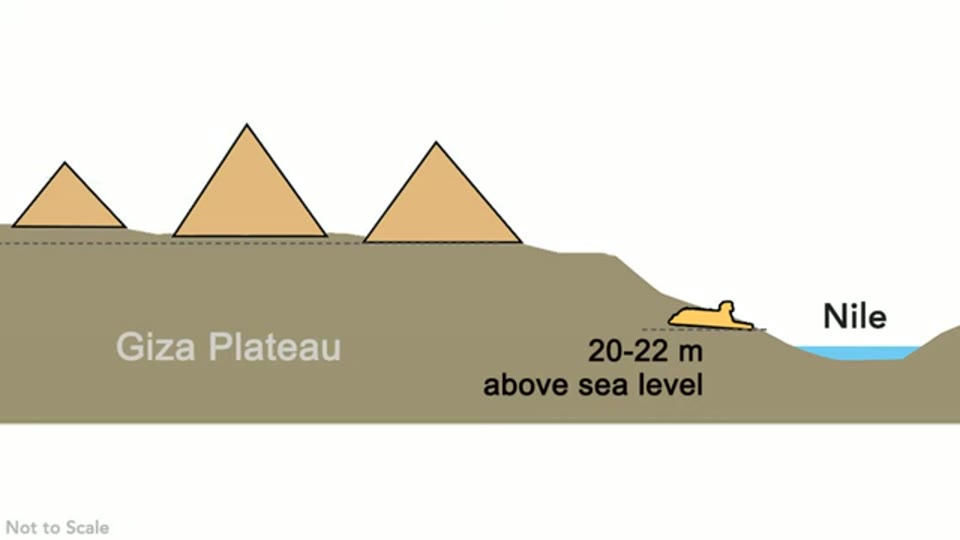

Curious Being
The Sphinx Water Erosion Mystery Explained
Tina · 20 min · watch on YouTube · summarised 2026-09-28
The Great Sphinx sits in a rectangular pit at the bottom of the Giza plateau, and the walls of that pit carry deep vertical channels that look like rainwater erosion 00:00–00:30. Giza has had roughly 25 mm / 1 inch of rain a year for the last 6,000 years, which is the whole difficulty: the marks appear to record a climate the site has not had since long before the conventional date of the monument.
What makes this video unusual is where it goes next. She takes the erosion seriously, works through what could and could not have made it — and then argues against the conclusion the alternative side normally draws from it. Her position is that the enclosure was cut for a reason, that the reason was drainage, and that the pyramids above it belong to the same project 16:21–18:16.
The second Sphinx
About 300 m from the Great Sphinx, beside the tomb of Khentkawes, is a mass of rock known as the second sphinx 00:37–01:04. It is not carved. It is a rough, sphinx-shaped natural formation — and she points out that the same long vertical erosion marks appear on it too. Two structures, one sculpted and one not, carrying the same signature.

An uncarved rock at Giza with the same profile and the same erosion as the monument.
The yardang proposal, and three objections to it
In 2023 a team of NYU researchers published a paper proposing that the Great Sphinx began as a yardang — a wind-carved rock ridge — that was later reshaped into a statue 02:27–03:07. Their method was physical: a mound of soft clay with harder material inside, worn down in a simulation of thousands of years of erosion, which produced a sphinx-like form. She notes this is not a new idea, crediting Émile Baraize, who worked at the site in the 1930s and proposed the Sphinx was built on two naturally formed yardangs sitting close together.
The study's own figure is on screen for this passage, and its text is legible.

What the wind-erosion study actually did, in its own words.
She gives the mechanism fairly 03:14–03:49: yardangs form in deserts with strong unidirectional winds, by the slow selective removal of softer material, leaving harder ridges behind. They take thousands to millions of years. And she accepts that the second sphinx looks like one — its head is darker, harder limestone and its neck the lighter, softer rock beneath 03:49–04:07.
Then three objections 04:40–05:27:
- Yardangs occur in fields. If the Sphinx is a large one and the second sphinx a small one, where are the rest? Other deserts have ridge fields; Giza has two.
- The bedrock immediately behind the Sphinx was not carved into ridges. The same wind, the same rock, a different result.
- The NYU experiment began with pre-shaped mud 05:25–05:27. The erosion in the experiment was not working on undifferentiated ground.
The figure she displays says otherwise, in words. Running under that sentence is the study's own panel, and its text reads: "A featureless mound transforms to a majestic lion in repose. The cylindrical head is the only inclusion, and its 'wind shadow' shields the body." The six models photographed along the bottom of the figure show that progression, beginning with a plain rounded blob. What the experiment did place in advance was the hard cylindrical inclusion inside the clay — which is the harder material she has already described, and which is the point of the experiment rather than a concealed assumption. The same figure also says the flow was produced in a water tunnel chosen to mimic the prevailing winds of Giza, not by wind.
Her own reading follows from that 05:58–07:01: the wind did not do this unaided. The pit was excavated first, with a long block deliberately left standing in the middle of it, and the wind then worked on an already isolated, already exposed mass. She reads the second sphinx the same way — an aerial photograph shows the adjacent bedrock block cut square, which she takes as too regular to be natural.

The rock beside the second sphinx is squared off, which she reads as excavation rather than weathering.
She cites geologist Jørn Christiansen for the man-made part 05:27–05:58: the enclosure walls are cut at right angles to each other to a height of up to 10 m, which settles that they were excavated whoever did it and whenever.
Flooding, ruled out with numbers
The most checkable passage in the video is the one that eliminates the two flood explanations 07:01–08:41. The figures she gives:
| Sphinx enclosure floor | 20–22 m above sea level |
| West and south enclosure walls | over 30 m above sea level |
| Typical recorded Cairo flood heights | about 7.6 m / 25 ft |
| Highest documented flood | about 8.4 m above normal level |
A Nile flood on that scale does not reach the floor of the enclosure, let alone the tops of walls 10 m above it. She quotes Robert Schoch to the same effect — the Nile flooding conjecture "doesn't work geologically" — which is notable, since Schoch is the author of the age argument she goes on to reject.
The Mediterranean version she treats as worse 08:01–08:41: a sea level 30 m above today's requires large-scale ice-sheet melt, sea level change is gradual even when abrupt, and the last time sea level stood that high was the Pliocene, about 3 million years ago. For the last 25,000 years sea level has mostly been lower and Giza further from the coast, not nearer.

The Sphinx sits at the bottom of the slope, well above any recorded flood.
Why a pit at the bottom of a slope
The plateau slopes east toward the Nile, and its north and west sides stand higher than the Sphinx 08:47–09:06. Rain falling on the plateau runs downhill, and the enclosure sits where it collects.
Her inference is that this is not an accident of siting but the purpose of the excavation 09:06–09:52: digging a 10 m deep rectangular basin at the base of a slope produces a drainage ditch, and you only build one where there is enough runoff to need one. At 25 mm of rain a year the plateau would not need it at all. The pit and the erosion marks in it are, on this reading, the same fact — a catch basin that worked.
She adds that the Sphinx itself carries the marks too, less severely 09:52–10:34. Photographs taken before the lower body was covered with restoration brickwork show faults and vertical fissures resembling those on the enclosure walls. Her explanation for the difference in severity is that the body took rainfall only, while the walls took the concentrated runoff draining off the plateau.

The statue itself carries vertical fissures, not only the walls around it.
Two more surfaces carry it 10:34–11:07: limestone blocks of the Sphinx Temple, built from stone quarried out of the basin, and the 10 m limestone core of the Khentkawes monument beside the second sphinx.
Which erosion came first
This is the hinge of the argument 11:07–12:15. The Sphinx has been worked on by both water and wind, in different climates, and the order determines when the basin was cut.
Her sequence is humid first, arid second, and the reason is structural rather than geological: if the basin is man-made and the yardang formed from a block the excavation left standing, then the digging precedes the wind. And you dig a drainage basin in a climate that produces runoff. So the excavation belongs to the wetter phase, and the wind-carving to the drier one that followed.
The story she assembles from that 12:15–13:18: a wetter Giza; a construction team cuts a catch basin at the foot of the plateau; the stone removed goes into the two structures in front, which she reads as stormwater detention and treatment; a block is left in the centre, possibly as flow control for water velocity or volume. The basin works, and the deep erosion marks are the record of it working. Then the climate turns arid and wind becomes the dominant process.
Why the corners are less worn
A detail worth the attention she gives it 13:18–14:33. Wind erosion is normally worst at low height, because it is sand carried in the airstream that does the cutting. A sunken rectangular basin behaves differently: it traps and accumulates sand in its corners, which then shields those surfaces. She points at the modern site as the live demonstration — the tourist park maintains the enclosure and sand still banks up at the back and in the corners.
The consequence she draws is that burial preserved the water erosion. As the basin silted up from the corners inward, the walls and the lower body went under sand with their channels intact, while the more exposed parts — the Sphinx's shoulders and upper back — kept taking wind and lost whatever fissures they had.
The granite, and why the enclosure has none
She connects this to her earlier argument that the granite casings on the lower courses of Khafre and Menkaure, and on Khafre's Valley Temple, are repairs to wind damage rather than original finish 14:33–15:46. The question she puts: if the Valley Temple beside the Sphinx was clad in granite, why was the badly eroded enclosure left bare?
Her answer is functional. By the time the repairs were made the climate was arid, the catch basin had no water to catch, and it had become a sediment trap. There was nothing left to maintain.
She adds that the repair work at Menkaure looks unfinished — only small areas of the casing stones smoothed — and offers two possibilities without choosing: a project run over budget, or a civilisation in decline 15:46–16:10. Because the methods and materials of the added casings are the same across the Giza structures, she reads the pyramids as contemporaries of the Sphinx basin and the two temples.

The granite work at Menkaure was left part-finished.
Where she parts company with her own side
Stated plainly 16:21–17:42: "Some argue that the Sphinx basin with the water erosion marks predates the pyramids by a lot, which I disagree."
Her reason is about what a catch basin implies. Modern catch basins are built where water accumulation causes problems — impermeable surfaces like roads and paved areas, and low-lying ground prone to flooding. A natural plateau does not normally need an excavated drainage system, because water percolates, flows along natural slopes, or evaporates. A humid-period Giza plateau would have carried vegetation and managed its own rainfall.
So, she argues, the basin was cut for a plateau that had already been developed — surfaced, built on, made impermeable. The drainage implies the construction above it. That puts the pyramids and the enclosure in the same era, and she closes by placing both inside her wider proposal that Giza was an industrial site: a mining operation 17:42–18:16.
Her sequence ends with the head 19:33–19:47. After the collapse of what she calls the pyramid civilisation and a long abandonment, Giza is reoccupied by predynastic and dynastic Egyptians, and the carving of the Sphinx's head may belong to that later period.
The same method, used to argue the other way: How Old Are These MEGALITHS? A Study of Erosion in Ancient Egyptian Architecture builds a case for much longer timelines out of published limestone erosion rates, and out of a comparison this video does not address — megalithic structures at Giza eroding badly while small-block Fourth Dynasty work at the same elevation, in the same limestone and never protected by granite casing, keeps its flat faces and square corners.
What you can check yourself
- The elevations. The enclosure floor at 20–22 m above sea level and the west and south walls above 30 m are published figures, and so are recorded Nile flood heights at Cairo. The flood argument is arithmetic anyone can redo.
- The second sphinx. The Khentkawes mass is 300 m away, is not a sculpture, and is photographable. Whether it carries comparable vertical channelling is a matter of looking.
- The aerial photograph. Whether the bedrock block beside the second sphinx is cut square is visible in satellite imagery.
- Sand accumulation today. That the enclosure banks sand in its corners under active maintenance is observable in current photographs, and is the observation her burial argument rests on.
- The NYU study. It is shown on screen twice — as a news article and as the study's own figure — and both can be looked up. Whether the simulation began from a pre-shaped mound is stated in the figure's own text.
- The Menkaure casing. How much of it was smoothed and how much left rough is one of the most photographed surfaces at Giza.
What the video does not settle
- The objection to the NYU experiment is contradicted by the frame it is spoken over. The figure on screen describes the starting state as "a featureless mound"; the narration says the experiment "used pre-shaped mud to begin with". Both cannot be right, and the video does not acknowledge the difference.
- The study is not named. It is shown as a Live Science article (Owen Jarus, 5 November 2023) and as an untitled figure. No author, journal or DOI appears, so a viewer wanting to check the objection has to find the paper themselves.
- No paleoclimate evidence appears. The argument requires a Giza wet enough to need a drainage basin, and no rainfall record, chart or date is offered for when that was. Her own video on the Sahara cycles argues that the last Green Sahara did not reach Giza's latitude — see the Green Sahara video — and the two are not reconciled.
- The elevation figure is a schematic she drew, marked "Not to Scale". It carries the 20–22 m number and nothing else — the flood heights, the 30 m wall tops and the sea-level comparison are spoken only. The arithmetic is checkable; the picture does not do it.
- The catch basin is an interpretation, not a finding. No inlet, outlet, channel, sluice or sediment analysis is shown. The reading rests on shape, position and slope.
- "Stormwater detention and treatment" is asserted of the two temples, which are megalithic structures with granite sheathing, and nothing in the video connects their construction to a water-handling function.
- The flow-control block is speculation offered as such — "maybe as a flow control to manage water velocity or volume."
- No date is given anywhere. The video establishes an order of events and declines to place it in time; she says explicitly that the question of when is for a later video.
- The head's later carving is unevidenced here. No tool marks, stylistic analysis or stratigraphy is offered for it.
- Her mining conclusion is carried in from other videos and is not argued in this one.